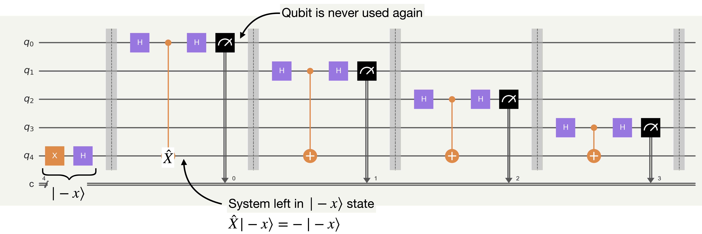

Dynamic circuits I#
from qiskit import *
from qiskit.quantum_info import hellinger_fidelity
from qiskit_aer import AerSimulator
# Plotting tools
import matplotlib.pyplot as plt
try:
plt.style.use('quantum-light')
except:
pass
%config InlineBackend.figure_format = 'retina'
IBMQ.load_account()
<AccountProvider for IBMQ(hub='ibm-q', group='open', project='main')>
provider = IBMQ.get_provider(project='internal-test')
backend = provider.get_backend('ibm_hanoi')
Background#
We have spent quite a bit of time already on Bernstein-Vazarani (BV) circuits. Here we will continue to do so for part one of our introduction into dynamic circuits.
def bv_ones_circs(N):
"""Create a Bernstein-Vazirani circuit with all-ones oracle of width N
"""
qc = QuantumCircuit(N, N-1)
qc.x(N-1)
qc.h(range(N))
qc.cx(range(N-1), N-1)
qc.h(range(N-1))
qc.barrier()
qc.measure(range(N-1), range(N-1))
return qc
N = 5
qc = bv_ones_circs(N)
qc.draw('mpl')
Now, obviously we can run this circuit (after transpiling) on IBM Quantum hardware. However, this circuit has a couple of issues that limit the output fidelity. (1) The circuits requires \(N+1\) qubits to encode a length \(N\) bit-string. (2) On the current fleet of IBM Quantum systems based on the heavy-hex architecture, any algorithm requiring more than 3 CNOT gates per qubit needs to be re-routed to match the constraints of the device, adding additional swap gates.
Obviously, if we wanted to extend our BV circuits to larger numbers of qubits, then the additional swaps would greatly limit the resulting fidelity. We can see this easily with a noisy simulator and/or execution on hardware.
Standard BV execution#
First, lets make a noisy simulator using the latest device calibration data.
sim = AerSimulator.from_backend(backend)
Now we will generate BV circuits for all-ones bit-string (worst case scenario) of length \(2\rightarrow 12\)
bv_circs = [bv_ones_circs(N) for N in range(2,13)]
We saw earlier that we can get more accurate simulations by adding timing information via scheduling, so lets do so here:
trans_bv_circs = transpile(bv_circs, backend=sim, optimization_level=3, scheduling_method='alap')
We can now simulate the output fidelity of these circuits on our noisy simulator:
sim_counts = sim.run(trans_bv_circs, shots=10000).result().get_counts()
sim_fidelities = [hellinger_fidelity(cnts, {'1'*(idx+1): 1}) for idx, cnts in enumerate(sim_counts)]
and, optionally, compare to execution on the real device:
real_counts = backend.run(trans_bv_circs, shots=10000).result().get_counts()
real_fidelities = [hellinger_fidelity(cnts, {'1'*(idx+1): 1}) for idx, cnts in enumerate(real_counts)]
The resulting plot comparing simulation verses actual execution is given below
fig, ax = plt.subplots()
ax.plot(range(2,13), sim_fidelities, label='Simulation')
ax.plot(range(2,13), real_fidelities, label='Hardware')
ax.set_xlabel('Bits')
ax.set_ylabel('Fidelity')
ax.legend();
The above figure shows that, at best, we can get a reasonable fidelity for only 6 bits in a BV circuit due to the addition of SWAP gates. Moreover, we see that simulation disagrees with actual execution quite a bit, even when including relaxation and dephasing effects through scheduling. This could be due to errors that are outside of the depolarizing model used here, or that the calibration data is no longer a faithful representation of the system. It is impossible to tell without additional work. Regardless, we need to be able to do better than this, and dynamic circuits are the way forward.
What are dynamic circuits?#
Up until now we have focused on circuits with a set pattern of instructions: gates, measurements, etc. This static configuration is much like lining up dominoes and watching them fall; it is a deterministic execution model.
However, the vast majority of classical computing programs have flow-control / branching, e.g. if, else, for, while, where the portion of code executed later in the routine is conditioned on what happened before. For example, computing an approximation of \(\pi\) in Python looks like:
# Initialize denominator
k = 1
# Initialize sum
pi_approx = 0
for i in range(1000000): # <---- (for)
# even elements are positive
if i % 2 == 0: # <---- (if)
pi_approx += 4/k
else: # <---- (else)
# odd elements are negative
pi_approx -= 4/k
k += 2
print(pi_approx)
As in classical computation, the richness of expression that is offered by flow-control in quantum circuits allows us to perform computations that are more efficient, or would otherwise be impossible.
We have already met our first dynamic operation when looking at dynamical decoupling, namely the reset operation:
qc_reset = QuantumCircuit(1)
qc_reset.reset(0)
qc_reset.draw('mpl')
Although it looks like any other operation, on IBM Quantum systems the reset operation is actually dynamic, consisting of a measurement operation followed by an x-gate conditioned on the (classical) value of the measurement.
This can be written in Qiskit in the following way:
qc = QuantumCircuit(1, 1)
qc.measure(0, 0)
# If bit 0 is 1, perform an x-gate, else do nothing
with qc.if_test((0, True)):
qc.x(0)
qc.draw('mpl')
This can also be written in the older c_if (classical-if) way by doing:
qc = QuantumCircuit(1, 1)
qc.measure(0, 0)
qc.x(0).c_if(0, True) #If bit 0 is True (1) do x-gate on Q0
qc.draw('mpl')
So we see that reset is nothing more than fixing the state of the qubit via measurement, and then flipping the bit if it is found to be in the \(|1\rangle\) state. Reset by itself has limited use outside of qubit initialization at the beginning of a circuit. However, the combination of measurement+reset is a critical component of many dynamic circuits as it allows for qubit measurement and recycling.
BV as a dynamic circuit#
It turns out that our friend the BV circuit is an example of a circuit that benefits from qubit recycling. To see how this works, let us look at the basic building block of the BV circuit

We see that, due to the target qubit kicking-back the phase of en eigenvalue equation, the computation of each bit in a BV circuit involves two-qubits. If we could reuse qubits, then the computation of any number of bits would require at most two-qubits. With measure+reset pairs (dynamic circuits) at our disposal, we can thus greatly improve the output fidelity of our BV circuits on hardware.
def dynamic_bv(bitstring):
"""Create a Bernstein-Vazirani circuit from a given bitstring.
Parameters:
bitstring (str): A bitstring.
Returns:
QuantumCircuit: Output circuit.
"""
qc = QuantumCircuit(2, len(bitstring))
# Prepare the |-x> state on target qubit
qc.x(1)
qc.h(1)
# For each bit (0 or 1) build a simple circuit block
for idx, bit in enumerate(bitstring[::-1]):
# Initial H gate on control
qc.h(0)
# If bit=1, do a CNOT gate
if int(bit):
qc.cx(0, 1)
# Final H gate to convert phase to computational-basis
qc.h(0)
# Measure
qc.measure(0,idx)
# If not at the final bit, recycle and reset qubits
if idx != (len(bitstring)-1):
qc.barrier([0,1])
# Reset control qubit for reuse
qc.reset(0)
# reset target qubit to minimize dephasing
qc.reset(1)
# Prepare the |-x> state on target qubit again
qc.x(1)
qc.h(1)
return qc
dyn_qc = dynamic_bv('1'*5)
dyn_qc.draw('mpl')
Let us first verify, using an ideal simulator, that the above circuit does in fact do what we think it should
sim = AerSimulator()
sim_bv_counts = sim.run(dyn_qc, shots=10000).result().get_counts()
sim_bv_counts
{'11111': 10000}
Indeed, we see that all of the shots give us the correct bit-string.
Now, let us see how our dynamic BV circuits work on hardware:
dyn_bv_circs = [dynamic_bv('1'*N) for N in range(2,13)]
As usual, we first need to transpile our circuits:
dyn_trans_qc = transpile(dyn_bv_circs, backend, optimization_level=3)
dyn_trans_qc[0].draw('mpl', idle_wires=False)
Let us run all of our circuits in a single job and collect the results:
real_bv_counts = backend.run(dyn_trans_qc, shots=10000).result().get_counts()
dyn_fidelities = [hellinger_fidelity(cnts, {'1'*(idx+2): 1}) for idx, cnts in enumerate(real_bv_counts)]
fig, ax = plt.subplots()
ax.plot(range(2,13), sim_fidelities, label='Simulation')
ax.plot(range(2,13), real_fidelities, label='Hardware')
ax.plot(range(2,13), dyn_fidelities, label='Dynamic-Hardware')
ax.set_xlabel('Bits')
ax.set_ylabel('Fidelity')
ax.legend();
You can immediately see that our dynamic version of BV vastly outperforms the standard version when the number of bits becomes large. At small number of bits there is an additional overhead from the cost of doing more measurements as they are the operations with the largest error rate. However, the overhead from measurements is quickly overcome by the error from additional swap gates that need to be added to satisfy the topology constraints for larger bit-strings.
Hands-on: How many bits can you go out to with >=0.5 fidelity?#
Because we use only two-qubits, irrespective of the length of the BV bit-string, we can look at bit-strings that are longer than the number of qubits in a device. Lets see how large a bit-string we can get a good fidelity on.